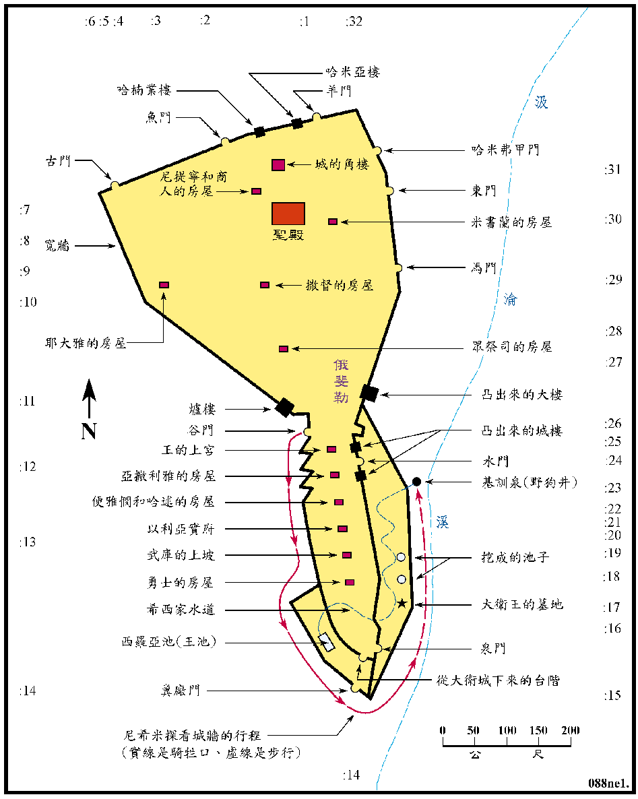

尼希米记
| 圣经 | 说明 |
|---|---|
| 尼1:2-2:19 | 尼希米於445BC (亚达薛西王二十年) 自书珊省奉准返以耶路撒冷，修建营楼之门和城墙，并任犹大省之省长。 |
| 尼13:6 | 尼希米於442BC (亚达薛西王卅二年) 去波斯后再返耶路撒冷。 |
<尼图01>尼希米所筑之城墙
| 圣经 | 说明 |
|---|---|
| 尼2:12-16 | 尼希米夜间察看城墙。 |
| 尼3:1-32 | 尼希米所修建之城墙。 |
| 尼6:15 | 用五十二天将城墙修建完成 (445BC)。 |
| 尼7:3 | 令居民各按班次，看守自己房屋对面之处的城墙。 |
| 尼8:1-4 | 城墙修建完成后，以色列人聚集在水门前，请以斯拉宣读律法书，然后再守住棚节，禁食认罪。 |
尼希米夜间去察看城墙的终点野狗井，又名龙井，很可能就是耶路撒冷重要的水源基训泉。他所修建的城墙确实的位置和大小，多未能确定。此图是按多数学者之意见绘出 (参考海天书楼的圣经启导本)。在图的四周的数字，都是第三章中圣经的节数，可以指示出图中该节所述 墙的相对应的位置。看法是从图的上方正中间开始、向左或反时钟方向循序进行，再往垂直及水平方向，就指示出每组人所建之城墙、城门、房屋和水池等的位置。